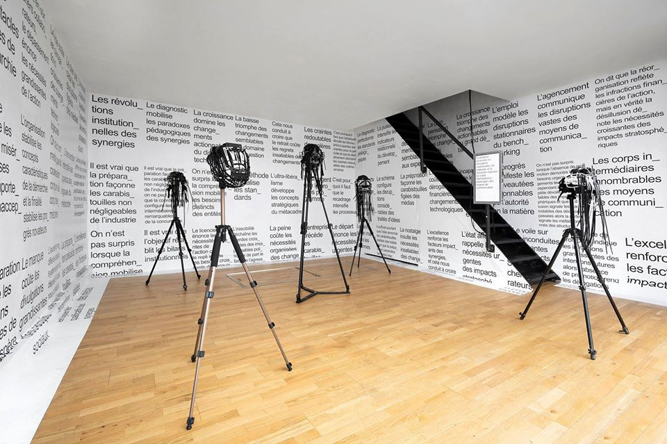

« IL EST URGENT QUE LE PRO_GRÈS PRO_GRAMME » Exposition de Laurent Lacotte et Thomas Guillement, sous le commissariat d'Indira Bréaud.
Participation en tant que programmeur.
La question de savoir ce qui permet de résister — c’est-à-dire ce qui permet de se soustraire aux logiques oppressives (…) — est au cœur de l’enquête menée par Thomas Guillemet et Laurent Lacotte dans « (…) », présentée dans le laboratoire artistique en milieu urbain The Window. La pratique de Thomas Guillemet interroge généralement la relation impétueuse entre le corps et le numérique. Son regard se porte notamment sur les éventuels modes d’émancipations face à l’emprise des technologies. Laurent Lacotte pour sa part, arpente les paysages, urbains ou ruraux, pour y greffer sa poésie, un écho strident à l’actualité politique, mais aussi à la solitude contemporaine. Il déambule les rues à la recherche d’Espérance, manifeste seul sur les places publiques, revêt d’une couverture de survie la statue de la Liberté de Nice. À première vue, leurs pratiques peuvent sembler dissonantes, trop éloignées l’une de l’autre pour s’unir. Mais l’exposition présentée s’inscrit à la croisée de leurs recherches respectives puisqu’elle explore la relation poreuse entre ces deux espaces a priori publics, que sont internet et la rue. L’intervention artistique vise à exacerber la dualité entre l’utilisation de ces lieux par les pouvoirs politiques et son usage par la résistance citoyenne.
Les slogans sont placardés. Immanquables, incisifs, ils se déploient dans l’espace public, s’accumulent dans la galerie et colonisent l’esprit. Les tournures sont familières, vides de sens, s’apparentant sensiblement au discours politique qui tourne inlassablement en boucle. Mais ces formules ne sont pas les dires de politiciens. Le duo d’artistes a créé un algorithme générant des phrases adaptées à l’humeur du spectateur. Une caméra de vidéosurveillance située à l’entrée du lieu analyse les expressions faciales de chacun : joie, surprise, peur, dégoût et colère sont les cinq émotions détectables. Dans une société où le contrôle s’accroît insidieusement, déterminer le ressenti des individus s’avère crucial. Le « marketing émotionnel » en est un exemple éloquent : à l’aide d’outils propres aux neurosciences, les émotions des consommateurs sont décryptées dans le but de pousser à l’achat. Ce dispositif se transpose à d’autres sphères, on se remémore notamment le « crime de pensée » dans 1984 de Georges Orwell, où chaque individu pouvait être jugé sur un doute non pas émis, mais éprouvé à l’encontre du parti au pouvoir.
Cette dynamique de surveillance s’appuie sur ce qui s’exprime au travers du corps : expression du visage, rythme des battements cardiaques, mouvement et dilatation des pupilles… Un procédé qui permettrait finalement de déterminer ce qui affecte l’individu, ce qui retient son attention et marque son esprit. Le théoricien Yves Citton place « l’affect au point d’articulation entre les deux domaines de rareté […] celui de l’attention et celui de la mémoire. » Dans le contexte actuel de surabondance d’informations, le rapport circonscrit que nous entretenons avec le temps structure une lutte tous azimuts pour l’obtention de l’attention dont disposent nos esprits. Les slogans, à mi-chemin entre l’affiche électorale et le panneau publicitaire, envahissent l’espace clos, de manière à ce que le spectateur ne sache où donner de la tête. Elles quadrillent méthodiquement l’espace, incarnant ordre et discipline.
Ainsi les mots s’alignent, décousus, mais structurés. En résulte un sermon au lyrisme narcotique, teinté d’une certaine touche d’humour. Narcotique certes, mais efficace. Les formules se composent d’éléments de langages bien précis propres à la communication politique. Efficaces, car objectives, ou plus justement parce qu’elles feignent l’objectivité. Le choix de la police de caractères Arial, réputée pour sa neutralité, n’est d’ailleurs pas anodin. (…) C’est en effet sous couvert d’anonymat que la propagande fonctionne le mieux. Et le jargon managérial se hisse au sommet du discours en tant qu’évidente vérité. À la fois cause et symptôme du capital, l’utilisation de ce vocabulaire par les pouvoirs publics scelle l’appartenance à l’idéologie libérale dominante. L’avènement de l’entreprise comme modèle de gestion atteste de la mise à mal — mais également de la complaisance — des États face à la montée en puissance de multinationales tentaculaires. Au regard de cette gouvernance et de ses dérives structurelles, des formes de résistance citoyenne s’organisent.
Au centre de la galerie, assailli par le discours dominant, un masque trône, dressé fièrement. Fabriqué à partir de matériaux de récupération (lesquelles ?), il est conçu pour déjouer la reconnaissance faciale, pour se dissimuler des yeux mécaniques braqués à outrance. L’armature métallique qui épouse le visage travestit les expressions faciales et permet à son propriétaire de tromper l’algorithme. Cet objet est l’emblème de la défense des libertés fondamentales. Porté en guise de protection contre le gaz lacrymogène lors des manifestions, il est également l’accessoire indissociable du mouvement activiste Anonymous. Si internet s’est imposé, à partir des années 90, en tant que nouvel espace social à inventer, il n’a pas échappé au système libéral actuel. D’abord aire de partage anonyme, ce réseau libérateur et réformateur a notamment bouleversé la manière dont s’organisent les manifestations. Mais les plateformes les plus populaires sont des entreprises privées dont la vocation est la récupération de toutes formes d’expressions singulières ou collectives pour servir leurs intérêts économiques. L’utilisation de ces réseaux demeure néanmoins garante d’une mobilisation massive, illustrant par là même l’ambiguïté de ces espaces. Internet forme ainsi une aire malléable, collective, structurée actuellement par une « économie restreinte de l’attention ». En rotation permanente parce que sollicitée de toute part, l’œuvre à l’allure anthropomorphe est érigée, prête au soulèvement.